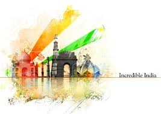

The name India is derived from Indus, which originates from the Old Persian word Hindush, equivalent to the Sanskrit word Sindhu,[20] which was the historical local appellation for the Indus River.[21] The ancient Greeks referred to the Indians as Indoi (Ἰνδοί), which translates as "The people of the Indus".[22] The geographical term Bharat (Bhārat; pronounced [ˈbʱaːɾət] (About this soundlisten)), which is recognised by the Constitution of India as an official name for the country,[18][23] is used by many Indian languages in its variations. It is a modernisation of the historical name Bharatavarsha, which traditionally referred to the Indian subcontinent and gained increasing currency from the mid-19th century as a native name for India.[18][24] Hindustan ([ɦɪndʊˈstaːn] (About this soundlisten)) is a Middle Persian name for India. It was introduced into India by the Mughals and widely used since then. Its meaning varied, referring to a region that encompassed northern India and Pakistan or India in its entirety.[18][24][25] Currently, the name may refer to either the northern part of India or the entire country.[25]